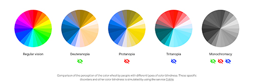
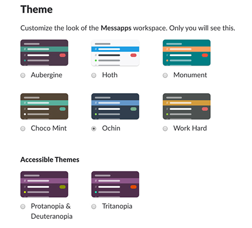

...continued
Often times, with the opportunities that have presented themselves in my life, I tend to take a lot of things for granted, including my vision. Not everyone has that, and I forget that, daily. I forget that others don’t experience life at the same frequency, with the same abilities, and until recently and with the ever changing internal awareness, I realized the way in which I design and the way in which I think was pretty exclusive. I was willing, but “willingness without action is fantasy”-na, right?
Below is a picture of varieties of color-blindness.
I started thinking about people who experience learning or developmental disabilities, vision deficiencies, and the fact that my design didn’t account for individuals whose lens through which they view life aren’t able to participate at times with the designs I created. Some people can’t see my text because of the typeface I chose. Some people can’t see colors, because of the palette I choose to work with.
I am starting today. First, let me apologize, and with this amends, comes a new project I am starting called Envision Design, a company, a culture, a movement that accounts for all. I can’t do it all in one day, and I don’t intend to. But, I am open to feedback, and will listen. I want to include all, and this is specifically tailored towards those who struggle or are challenged with visual deficiencies, colorblindness, or learning and neurological disorders that affect vision.
Tuchkov provides insight into the value of black, white, nd shades of grey. He talks about quality design considerations when choosing color palettes and gives great examples as shown in the picture below.
Before you create your next masterpiece, consider those who might not have access to your design and how might you approach this creation with inclusivity?
- Cory Risch-Smith